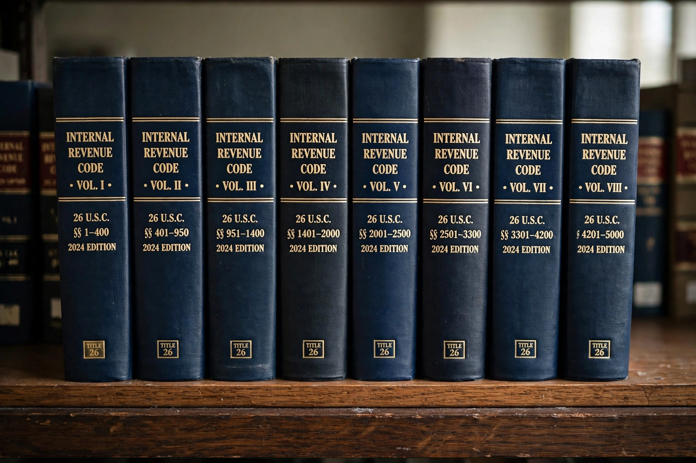

The Internal Revenue Code (IRC), formally Title 26 of the United States Code, is the domestic portion of federal statutory tax law in the United States, covering income, estate and gift, employment, and excise taxes.
The modern code descends from the Revenue Act of 1913 following the Sixteenth Amendment. Comprehensive revisions in 1954 and 1986 reorganised it; the 1986 version kept the 1954 name for continuity despite the Tax Reform Act renaming it.
The code is organised into subtitles: A income taxes, B estate and gift taxes, C employment taxes, D excise taxes, E alcohol, tobacco and certain other excise taxes, plus procedure and administration. Regulations issued by the Department of the Treasury interpret it.
Subtitle A imposes a graduated income tax on individuals and corporations, defining gross income, deductions, and credits. See Taxation in the United States.